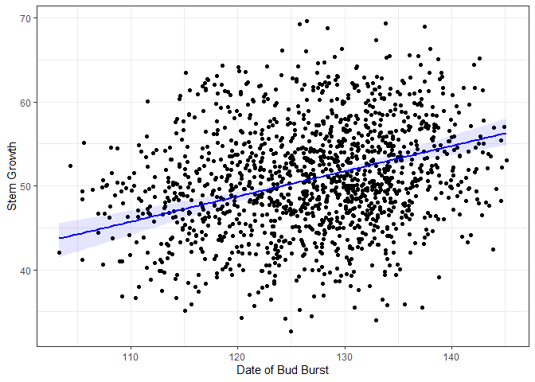
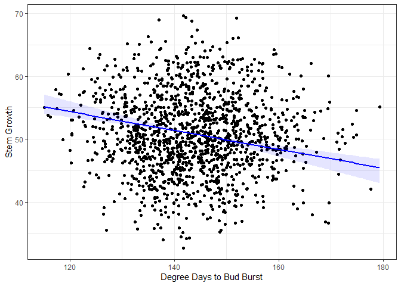

semEff provides functionality to automatically calculate direct, indirect, and total effects for ‘piecewise’ structural equation models, comprising lists of fitted models representing structured equations (Shipley 2000, 2009; Lefcheck 2016). Confidence intervals are provided via bootstrapping.
Currently supported model classes are "lm", "glm", "lmerMod", "glmerMod", "lmerModLmerTest", "gls", and "betareg".
Installation
You can install the released version of semEff from CRAN with:
install.packages("semEff")And the development version from GitHub with:
devtools::install_github("murphymv/semEff@dev")Example
# install.packages(c("semEff", "ggplot2"))
library(semEff)
library(ggplot2)
# Simulated data from Shipley (2009) on tree growth and survival (see ?Shipley)
head(Shipley)
#> site tree lat year Date DD Growth Survival Live
#> 1 1 1 40.38063 1970 115.4956 160.5703 61.36852 0.9996238 1
#> 2 1 2 40.38063 1970 118.4959 158.9896 43.77182 0.8433521 1
#> 3 1 3 40.38063 1970 115.8836 159.9262 44.74663 0.9441110 1
#> 4 1 4 40.38063 1970 110.9889 161.1282 48.20004 0.9568525 1
#> 5 1 5 40.38063 1970 120.9946 157.3778 50.02237 0.9759584 1
#> 6 1 1 40.38063 1972 114.2315 160.6120 56.29615 0.9983398 1
# Hypothesised SEM: latitude -> degree days to bud burst -> date of burst -> growth -> survival
lapply(Shipley.SEM, formula)
#> $DD
#> DD ~ lat + (1 | site) + (1 | tree)
#>
#> $Date
#> Date ~ DD + (1 | site) + (1 | tree)
#>
#> $Growth
#> Growth ~ Date + (1 | site) + (1 | tree)
#>
#> $Live
#> Live ~ Growth + (1 | site) + (1 | tree)
# Bootstrap model effects (10000 reps... can take a while)
# system.time(
# Shipley.SEM.Boot <- bootEff(Shipley.SEM, R = 10000, seed = 53908, ran.eff = "site")
# )
# Calculate SEM effects and CIs (use saved bootstrapped SEM)
eff <- suppressWarnings(semEff(Shipley.SEM.Boot))
# Summary of effects for response "Growth"
eff$Summary$Growth
#> $Direct
#> Date
#> Estimate 0.382
#> Lower CI 0.289
#> Upper CI 0.513
#> *
#>
#> $Indirect
#> lat DD
#> Estimate 0.165 -0.240
#> Lower CI 0.088 -0.351
#> Upper CI 0.290 -0.180
#> * *
#>
#> $Total
#> lat DD Date
#> Estimate 0.165 -0.240 0.382
#> Lower CI 0.088 -0.351 0.289
#> Upper CI 0.290 -0.180 0.513
#> * * *
#>
#> $Mediators
#> DD Date
#> Estimate 0.165 -0.075
#> Lower CI 0.088 -0.105
#> Upper CI 0.290 -0.048
#> * *
# Extract total effects for Growth
tot <- totEff(eff)[["Growth"]]
tot.b <- totEff(eff, type = "boot")[["Growth"]]
# Predict effects for "Date" (direct) and "DD" (indirect) on Growth
mod <- Shipley.SEM$Growth
dat <- na.omit(Shipley)
fit <- sapply(c("Date", "DD"), function(i) {
x <- seq(min(dat[i]), max(dat[i]), length = 100)
x <- data.frame(x); names(x) <- i
c(x, predEff(mod, newdata = x, effects = tot[i], eff.boot = tot.b))
}, simplify = FALSE)
# Function to plot predictions
plotFit <- function(x, y, fit, x.lab = NULL, y.lab = NULL) {
x2 <- fit[[1]]; f <- fit[[2]]; ci.l <- fit[[3]]; ci.u <- fit[[4]]
ggplot () +
geom_point(aes(x, y)) +
geom_ribbon(aes(x2, ymin = ci.l, ymax = ci.u, alpha = "0.15"), fill = "blue") +
geom_line(aes(x2, f), color = "blue", size = 1) +
xlab(x.lab) + ylab(y.lab) +
theme_bw() + theme(legend.position = "none")
}
# Direct effects of Date
plotFit(x = dat$Date, y = dat$Growth, fit = fit$Date, x.lab = "Date of Bud Burst", y.lab = "Stem Growth")
#> Warning: Using alpha for a discrete variable is not advised.
# Indirect effects of DD (operating via Date)
plotFit(x = dat$DD, y = dat$Growth, fit = fit$DD, x.lab = "Degree Days to Bud Burst", y.lab = "Stem Growth")
#> Warning: Using alpha for a discrete variable is not advised.
References
Lefcheck, J. S. (2016). piecewiseSEM: Piecewise structural equation modelling in R for ecology, evolution, and systematics. Methods in Ecology and Evolution, 7(5), 573–579. https://doi.org/f8s8rb
Shipley, B. (2000). A New Inferential Test for Path Models Based on Directed Acyclic Graphs. Structural Equation Modeling: A Multidisciplinary Journal, 7(2), 206–218. https://doi.org/cqm32d
Shipley, B. (2009). Confirmatory path analysis in a generalized multilevel context. Ecology, 90(2), 363–368. https://doi.org/bqd43d